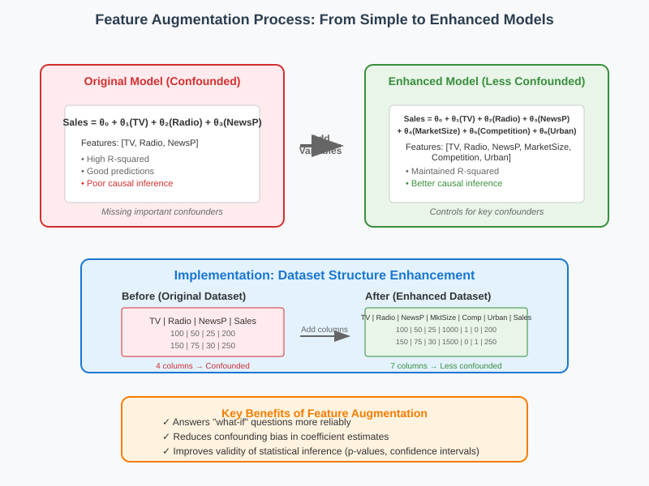
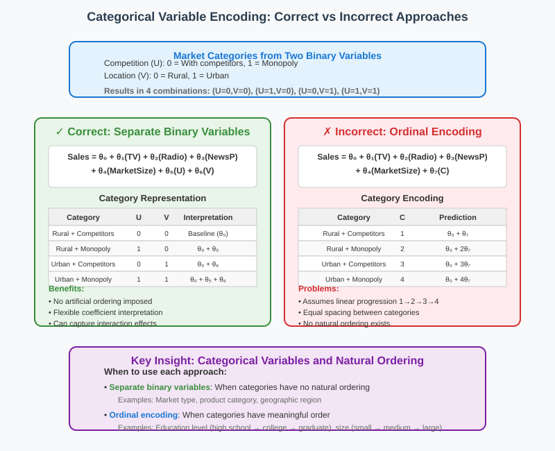
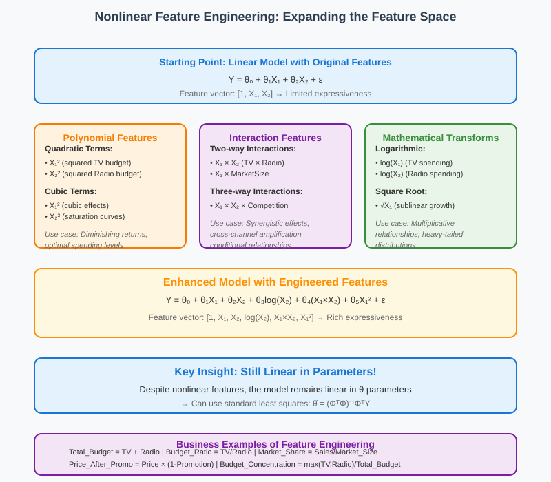
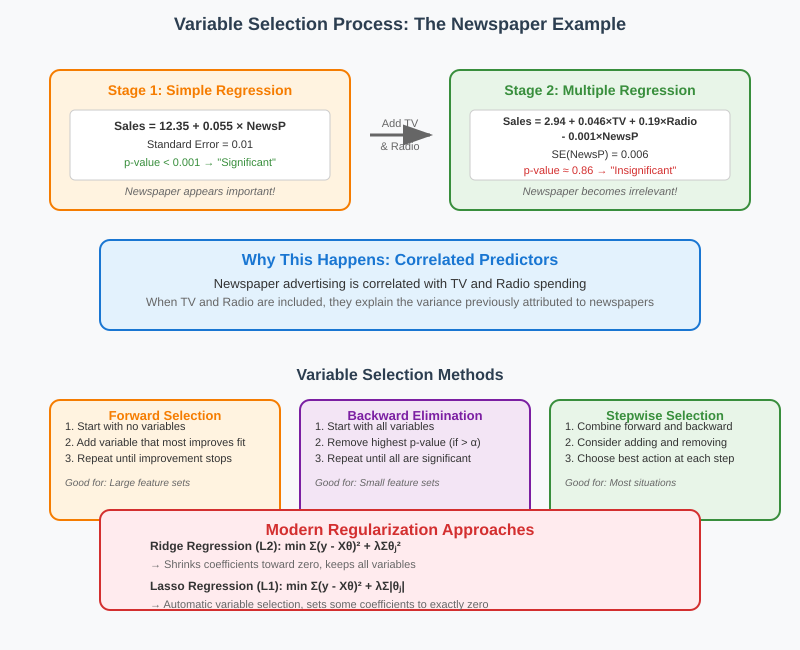
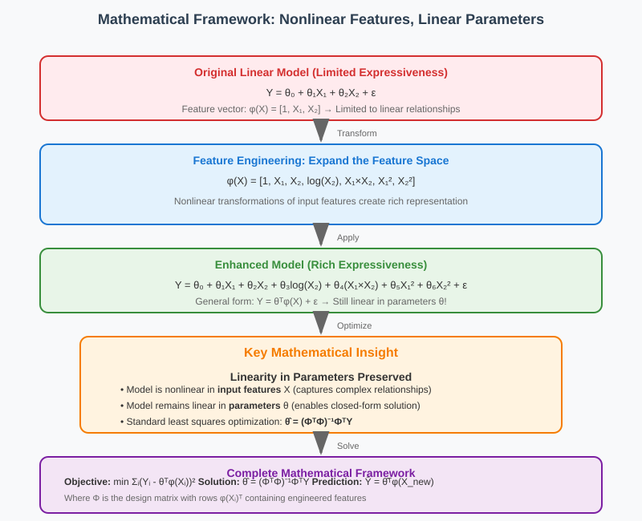

Linear Regression with Nonlinear Features
📋 Quick Navigation
- 🔍 Addressing Latent Variable Problems
- 🏷️ Categorical Variables and Proper Encoding
- 🔧 Feature Engineering Techniques
- 📊 Variable Selection Methods
- 🧮 Mathematical Framework
- ⚡ Implementation and Efficiency
- 📚 References & Further Reading
🔍 Addressing Latent Variable Problems
When faced with latent variable issues that create spurious correlations, one primary solution is to include additional variables that were previously omitted from the model.

The Core Strategy
Rather than accepting the limitations of confounded models, we can expand our feature space by:
- Including omitted variables that may be driving relationships
- Adding categorical variables that capture different market conditions
- Creating interaction terms between existing variables
- Engineering new features through transformations
Mathematical Expansion
Starting from a basic model:
Sales = θ₀ + θ₁(TV) + θ₂(Radio) + θ₃(NewsP) + ε
We expand to include previously hidden factors:
Sales = θ₀ + θ₁(TV) + θ₂(Radio) + θ₃(NewsP) + θ₄(MarketSize) + ε
From Prediction to Causation
| Aspect | Before Adding Variables | After Adding Variables |
|---|---|---|
| Prediction Accuracy | High (due to spurious correlation) | Maintained or improved |
| Causal Validity | Low (confounded) | Higher (controlling for confounders) |
| What-if Questions | Cannot answer reliably | Can provide better answers |
| Standard Errors | Biased and unreliable | More reliable |
Practical Implementation
Dataset Structure Enhancement:
- Original: [TV, Radio, NewsP, Sales]
- Enhanced: [TV, Radio, NewsP, MarketSize, CompetitionLevel, UrbanRural, Sales]
Each new column represents additional information that helps explain the outcome variable beyond the original predictors.
Business Example: Market Characteristics
Original Model (Confounded):
Sales ~ TV + Radio + NewsP
Enhanced Model (Less Confounded):
Sales ~ TV + Radio + NewsP + MarketSize + Competition + UrbanRural
By including market size and competition level, we can better isolate the true effects of advertising spending.
🏷️ Categorical Variables and Proper Encoding
Categorical variables are essential for capturing qualitative differences that affect outcomes. However, their encoding requires careful consideration to avoid imposing artificial ordering.

Types of Categorical Variables
Binary Variables
U = Competition Level
U = 0: Markets with competitors
U = 1: Markets without competitors (monopoly)
V = Location Type
V = 0: Rural areas
V = 1: Urban areas
Multi-Category Variables
When combining binary variables, we get multiple categories:
- Category 1: Rural + Competitors (U=0, V=0)
- Category 2: Rural + No Competitors (U=1, V=0)
- Category 3: Urban + Competitors (U=0, V=1)
- Category 4: Urban + No Competitors (U=1, V=1)
Correct vs Incorrect Encoding
✅ Correct Approach: Separate Binary Variables
Sales = θ₀ + θ₁(TV) + θ₂(Radio) + θ₃(NewsP) + θ₄Z + θ₅U + θ₆V + ε
Where:
Z = Market size (continuous)
U = Competition indicator (binary: 0/1)
V = Urban indicator (binary: 0/1)
❌ Incorrect Approach: Ordinal Encoding
Sales = θ₀ + θ₁(TV) + θ₂(Radio) + θ₃(NewsP) + θ₄Z + θ₇C + ε
Where:
C = Combined category (1, 2, 3, 4)
Why Ordinal Encoding Fails
| Issue | Problem | Consequence |
|---|---|---|
| Artificial Ordering | Assumes Category 4 > Category 3 > Category 2 > Category 1 | Imposes non-existent linear progression |
| Equal Spacing | Assumes difference between 1→2 equals 2→3 equals 3→4 | Forces equal incremental effects |
| Loss of Flexibility | Single coefficient θ₇ for all category effects | Cannot capture complex category interactions |
| Reduced Interpretability | Coefficient represents "moving up one category" | Unclear business meaning |
Best Practices for Categorical Variables
1. One-Hot Encoding
# Instead of: Category = [1, 2, 3, 4]
# Use separate indicators:
Rural_Competitors = [1, 0, 0, 0]
Rural_Monopoly = [0, 1, 0, 0]
Urban_Competitors = [0, 0, 1, 0]
Urban_Monopoly = [0, 0, 0, 1]
2. Reference Category
Choose one category as the baseline (typically the most common):
Sales = θ₀ + θ₁(TV) + θ₂(U) + θ₃(V) + ε
Interpretation:
θ₀ = Baseline (Rural + Competitors)
θ₂ = Effect of removing competitors
θ₃ = Effect of being urban vs rural
3. Interaction Effects
Sales = θ₀ + θ₁(TV) + θ₂(U) + θ₃(V) + θ₄(U×V) + ε
Where U×V captures the interaction between competition and location
🔧 Feature Engineering Techniques
Feature engineering involves creating new variables from existing ones to capture nonlinear relationships while maintaining the linear regression framework.

Common Transformation Types
1. Mathematical Transformations
Logarithmic Transformations:
Original: Sales ~ TV + Radio
Enhanced: Sales ~ TV + Radio + log(TV) + log(Radio)
Use cases: - Diminishing returns (advertising effectiveness) - Multiplicative relationships - Heavy-tailed distributions
Polynomial Features:
Original: Sales ~ TV + Radio
Enhanced: Sales ~ TV + Radio + TV² + Radio² + TV³
Use cases: - Quadratic relationships (optimal spending levels) - Saturation effects - U-shaped or inverted-U relationships
2. Interaction Terms
Two-way Interactions:
Sales ~ TV + Radio + (TV × Radio)
Interpretation: - The effect of TV advertising depends on Radio spending level - Synergistic effects between channels - Cross-channel amplification
Three-way Interactions:
Sales ~ TV + Radio + NewsP + (TV × Radio) + (TV × NewsP) + (Radio × NewsP) + (TV × Radio × NewsP)
3. Domain-Specific Features
Business Examples:
| Original Features | Engineered Features | Business Logic |
|---|---|---|
| TV, Radio budgets | Total_Budget = TV + Radio | Overall spending level |
| TV, Radio budgets | Budget_Ratio = TV/Radio | Channel allocation strategy |
| TV, Radio budgets | Budget_Concentration = max(TV,Radio)/Total | Concentration vs diversification |
| Price, Promotion | Price_After_Promo = Price × (1-Promotion) | Effective customer price |
| Sales, Market_Size | Market_Share = Sales/Market_Size | Competitive position |
When to Apply Transformations
Statistical Indicators
- Residual plots: Non-random patterns suggest missing nonlinear terms
- Partial regression plots: Curved relationships in scatter plots
- Box-Cox tests: Optimal power transformations for normality
Domain Knowledge
- Economic theory: Diminishing returns, economies of scale
- Physical laws: Power relationships, exponential decay
- Marketing principles: Saturation curves, interaction effects
Mathematical Framework
The key insight is that nonlinear feature engineering maintains linearity in parameters:
Original Model:
Y = θ₀ + θ₁X₁ + θ₂X₂ + ε
Augmented Model:
Y = θ₀ + θ₁X₁ + θ₂X₂ + θ₃log(X₂) + θ₄(X₁×X₂) + ε
Still linear in θ parameters!
This means we can use standard least-squares optimization:
min Σ(Yᵢ - θᵀφ(Xᵢ))²
θ i
Where φ(X) is the feature vector: [1, X₁, X₂, log(X₂), X₁×X₂]
📊 Variable Selection Methods
As we add more features, some may become redundant or insignificant. Variable selection helps identify the most important predictors while avoiding overfitting.

The Newspaper Example
This classic example demonstrates how variable importance changes when adding correlated predictors:
Stage 1: Simple Regression
Sales = 12.35 + 0.055 × NewsP
Standard Error = 0.01
Result: Newspaper appears "significant"
Stage 2: Multiple Regression
Sales = 2.94 + 0.046 × TV + 0.19 × Radio - 0.001 × NewsP
Standard Error for NewsP = 0.006
Result: Newspaper becomes "inconsequential" (supports θ_NewsP = 0)
Why This Happens
Explanation: Newspaper advertising is correlated with TV and Radio spending. When TV and Radio are included, they explain the variance previously attributed to newspapers.
Statistical Principle: When predictors are correlated, adding the more important ones makes the less important ones appear redundant.
Variable Selection Strategies
1. Forward Selection
Step 1: Start with no variables
Step 2: Add variable that most improves model fit
Step 3: Repeat until improvement stops being significant
Algorithm: 1. Fit all single-variable models, select best 2. For remaining variables, add each to current model 3. Select addition that gives best improvement 4. Repeat until no improvement exceeds threshold
2. Backward Elimination
Step 1: Start with all variables
Step 2: Remove variable with highest p-value (if > α)
Step 3: Repeat until all remaining variables are significant
Algorithm: 1. Fit full model with all variables 2. Identify variable with largest p-value 3. If p-value > 0.05, remove variable and refit 4. Repeat until all p-values < 0.05
3. Stepwise Selection (Bidirectional)
Combine forward selection and backward elimination
At each step, consider both adding and removing variables
4. Information Criteria
AIC = 2k - 2ln(L) (Akaike Information Criterion)
BIC = k×ln(n) - 2ln(L) (Bayesian Information Criterion)
Where:
k = number of parameters
n = sample size
L = likelihood
Selection rule: Choose model with minimum AIC/BIC
Modern Approaches
Regularization Methods
Instead of discrete inclusion/exclusion, use continuous penalties:
Ridge Regression (L2):
min Σ(Yᵢ - θᵀXᵢ)² + λΣθⱼ²
θ i j
Lasso Regression (L1):
min Σ(Yᵢ - θᵀXᵢ)² + λΣ|θⱼ|
θ i j
Elastic Net:
min Σ(Yᵢ - θᵀXᵢ)² + λ₁Σ|θⱼ| + λ₂Σθⱼ²
θ i j j
Variable Selection Workflow
| Step | Action | Criterion | Result |
|---|---|---|---|
| 1. Fit Full Model | Include all candidate variables | - | Baseline comparison |
| 2. Check Significance | Examine p-values and confidence intervals | p < 0.05 | Identify candidates for removal |
| 3. Remove Insignificant | Drop variables with highest p-values | Iterative | Simplified model |
| 4. Check for Improvement | Compare nested models | F-test, AIC, BIC | Validate removals |
| 5. Validate Final Model | Cross-validation, holdout testing | Prediction accuracy | Ensure generalization |
🧮 Mathematical Framework
The power of nonlinear feature engineering lies in maintaining the linear regression structure while expanding the feature space.

Core Mathematical Insight
Key Principle: Any nonlinear transformation of input features that results in a linear combination of parameters can be solved using standard linear regression.
General Form: Y = θᵀφ(X) + ε
Where:
Y = Response variable
θ = Parameter vector
φ(X) = Feature transformation function
ε = Error term
Feature Vector Construction
Original Features
X = [X₁, X₂] (e.g., TV budget, Radio budget)
Augmented Feature Vector
φ(X) = [1, X₁, X₂, log(X₂), X₁×X₂, X₁², ...]
Components:
1 = Intercept term
X₁ = Linear TV effect
X₂ = Linear Radio effect
log(X₂) = Diminishing returns in Radio
X₁×X₂ = Interaction between TV and Radio
X₁² = Quadratic TV effect
Optimization Problem
The least-squares objective remains quadratic in parameters:
L(θ) = Σᵢ(Yᵢ - θᵀφ(Xᵢ))²
Expanding:
L(θ) = Σᵢ(Yᵢ² - 2Yᵢθᵀφ(Xᵢ) + θᵀφ(Xᵢ)φ(Xᵢ)ᵀθ)
In matrix form:
L(θ) = ||Y - Φθ||² = YᵀY - 2θᵀΦᵀY + θᵀΦᵀΦθ
Where Φ is the design matrix with rows φ(Xᵢ)ᵀ.
Closed-Form Solution
The optimal parameters are given by:
θ̂ = (ΦᵀΦ)⁻¹ΦᵀY
Key Properties: - Same formula as simple linear regression - Φ replaces X (original design matrix) - Solution unique if ΦᵀΦ is invertible - Computational complexity: O(p³) where p = number of features
Prediction Formula
For a new observation X_new:
Ŷ_new = θ̂ᵀφ(X_new)
Example with specific features:
φ(X_new) = [1, TV_new, Radio_new, log(Radio_new), TV_new×Radio_new]
Ŷ_new = θ₀ + θ₁×TV_new + θ₂×Radio_new + θ₃×log(Radio_new) + θ₄×TV_new×Radio_new
Statistical Properties
Unbiased Estimation
If the true model is Y = θ*ᵀφ(X) + ε with E[ε] = 0:
E[θ̂] = θ*
Variance-Covariance Matrix
Var(θ̂) = σ²(ΦᵀΦ)⁻¹
Standard Errors
SE(θⱼ) = σ̂√[(ΦᵀΦ)⁻¹]ⱼⱼ
Computational Considerations
Efficiency Gains
- Reuse algorithms: Same software as linear regression
- Parallel computation: Matrix operations are parallelizable
- Sparse methods: When many features are zero
- Incremental updates: Add features without full recomputation
Numerical Stability
- Condition number: Check (ΦᵀΦ) for near-singularity
- Scaling: Normalize features to similar ranges
- Regularization: Add ridge penalty for stability
⚡ Implementation and Efficiency
Modern software makes nonlinear feature engineering accessible while maintaining computational efficiency.
Software Implementation
Python Example
import numpy as np
import pandas as pd
from sklearn.linear_model import LinearRegression
from sklearn.preprocessing import PolynomialFeatures
# Original features
X = df[['TV', 'Radio']]
y = df['Sales']
# Create polynomial and interaction features
poly = PolynomialFeatures(degree=2, include_bias=False)
X_poly = poly.fit_transform(X)
# Feature names: ['TV', 'Radio', 'TV^2', 'TV*Radio', 'Radio^2']
feature_names = poly.get_feature_names(['TV', 'Radio'])
# Fit enhanced model
model = LinearRegression()
model.fit(X_poly, y)
R Example
# Original model
model1 <- lm(Sales ~ TV + Radio, data = df)
# Enhanced model with interactions and polynomials
model2 <- lm(Sales ~ TV + Radio + I(TV^2) + I(Radio^2) + TV:Radio, data = df)
# Automatic polynomial expansion
model3 <- lm(Sales ~ poly(TV, 2) * poly(Radio, 2), data = df)
Performance Characteristics
| Aspect | Linear Model | Enhanced Model | Scaling Factor |
|---|---|---|---|
| Features | p | k (where k >> p) | O(k/p) |
| Training Time | O(np²) | O(nk²) | O((k/p)²) |
| Memory Usage | O(np) | O(nk) | O(k/p) |
| Prediction Time | O(p) | O(k) | O(k/p) |
Scalability Strategies
1. Feature Selection
- Use regularization to automatically select important features
- Apply stepwise selection before expensive computations
- Use domain knowledge to limit feature space
2. Computational Optimizations
- Sparse matrices: When many features are zero
- Incremental learning: Update models with new data
- Parallel processing: Leverage multiple cores for matrix operations
- GPU acceleration: For very large feature spaces
3. Approximation Methods
- Random projections: Reduce dimensionality while preserving structure
- Feature hashing: Map high-dimensional features to lower dimensions
- Kernel approximations: Approximate infinite-dimensional feature spaces
Best Practices
Data Preprocessing
# 1. Handle missing values
X_filled = X.fillna(X.median())
# 2. Scale features to similar ranges
from sklearn.preprocessing import StandardScaler
scaler = StandardScaler()
X_scaled = scaler.fit_transform(X_filled)
# 3. Create polynomial features
poly = PolynomialFeatures(degree=2)
X_poly = poly.fit_transform(X_scaled)
# 4. Apply regularization
from sklearn.linear_model import RidgeCV
model = RidgeCV(alphas=[0.1, 1.0, 10.0])
model.fit(X_poly, y)
Validation Strategy
from sklearn.model_selection import cross_val_score
# Compare models using cross-validation
scores_linear = cross_val_score(LinearRegression(), X, y, cv=5)
scores_poly = cross_val_score(LinearRegression(), X_poly, y, cv=5)
print(f"Linear model CV score: {scores_linear.mean():.3f}")
print(f"Polynomial model CV score: {scores_poly.mean():.3f}")
📚 References & Further Reading
📖 Core Textbooks
- James, G., Witten, D., Hastie, T., & Tibshirani, R. (2021). An Introduction to Statistical Learning (2nd ed.). Springer.
-
Comprehensive coverage of feature engineering and variable selection
-
Hastie, T., Tibshirani, R., & Friedman, J. (2009). The Elements of Statistical Learning (2nd ed.). Springer.
-
Advanced treatment of basis expansions and regularization methods
-
Bishop, C. M. (2006). Pattern Recognition and Machine Learning. Springer.
- Mathematical foundations of linear models with nonlinear features
🔬 Research Papers
- Tibshirani, R. (1996). Regression shrinkage and selection via the lasso. Journal of the Royal Statistical Society, 58(1), 267-288.
-
Foundational paper on L1 regularization for variable selection
-
Zou, H., & Hastie, T. (2005). Regularization and variable selection via the elastic net. Journal of the Royal Statistical Society, 67(2), 301-320.
- Combines ridge and lasso penalties for improved feature selection
🌐 Applied Examples
- Scikit-learn: Polynomial Features
-
Practical implementation of polynomial and interaction features
-
Comprehensive guide to feature creation and transformation techniques
- Advanced categorical variable encoding techniques
🚀 Interactive Resources

Notebook Topics: - Polynomial feature engineering - Categorical variable encoding - Variable selection methods - Regularization techniques - Cross-validation for model comparison
📊 Datasets for Practice
- Boston Housing: Feature engineering with property characteristics
- Auto MPG: Polynomial relationships in automotive data
- Marketing Mix: Interaction effects in advertising channels
- Ames Housing: Comprehensive categorical variable handling